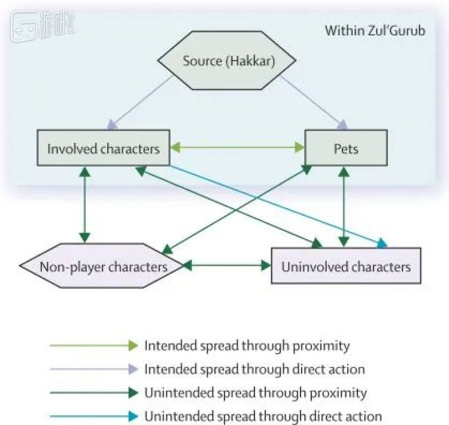

这款游戏，让我对瘟疫有了新认识
原文链接 备份链接 洗手有多重要？ 来复习一下标准答案：和戴口罩一样重要，有时可能还更重要。 经历了这么多天密集轰炸式卫生常识再教育，平时再懒的人，现在在洗手这件事上都勤快得不可思议，恨不得把手洗秃噜皮。 如果想加深自我教育，以沉浸式体验 …
而另一个能帮助人们理解疫情的游戏已经玩不到了。
《魔兽世界》玩家想必基本都听说过这样一个故事：
2005年，拥有将近400万玩家的《魔兽世界》中爆发了一场瘟疫。因为暴雪设计上的疏漏，一种传染性极强的debuff在各大主城肆虐，在造成巨大伤亡的同时，引发了游戏中的社会混乱。
这场在虚拟世界里发生的风波被称作“堕落之血事件”，一度得到公共卫生学界的关注，在接下来的数年间，被很多研究者作为流行病学的“虚拟案例”加以研究。
当时，一名叫艾瑞克·洛夫格伦(Eric Lofgren)的美国大学生，以此事件撰写了一篇论文，主题是“虚拟世界如何协助研究现实中的传染病”，刊发于顶级医学期刊《柳叶刀·传染病》上。
13年后，洛夫格伦已经从本科生变成了一名资深的流行病学家。在新冠疫情全球大流行的当下，他目前的主要工作是研究美国医疗体系如何应对新冠病毒的流行。而近期他在接受采访时表明，2007年那篇关于《魔兽世界》的论文，至今仍然对普通人个体、乃至整个社会医疗卫生体系，有着非常的意义。
我们不妨跟着洛夫格伦，从流行病学的视角重新回顾一遍“堕落之血”。（鉴于“堕落之血”事件已经广为流传，如果你早已熟知，可跳过下面这个章节从第二部分看起。）
1
“堕落之血事件”始于2005年的9月13日。或者更准确地说，是在《魔兽世界》1.7版本上线，“祖尔格拉布”副本正式开放这一天。
“祖尔格拉布”副本的最终BOSS是“血神”哈卡，在战斗过程中，哈卡会向玩家释放名为“堕落之血”的负面法术，中招的玩家不仅会得到一个持续掉血的debuff，还会将其传染给一定距离内的队友。
不难看出，这个技能的目的是在限制玩家的走位。由于它造成的持续伤害极高，所以在暴雪的本意里，“堕落之血”只应该出现在这场BOSS战中，不太可能会被玩家带出副本。
但暴雪的设计师忽略了自己的设计漏洞。
作为一个具备传染性的debuff，玩家角色并非“堕落之血”的唯一宿主——玩家的宠物也会感染“堕落之血”。而宠物身上的debuff并不会因为解散消失，会在下次召唤时继续保留（这是为了防止玩家通过解散再召唤的手段达成“净化”的效果）。
于是，有玩家在副本中解散感染“堕落之血”的宠物，再去人口稠密的主城中把携带瘟疫的宠物召唤了出来——潘多拉魔盒就这样打开了。
在洛夫格伦的研究中，肆虐艾泽拉斯的“堕落之血”，和现实中流行病传播的情形十分相似。
比如，游戏中的玩家都拥有远距离移动的手段，这是“堕落之血”快速传播的基础。很多感染了的玩家在死亡或是治愈前将自己传送到其他主城，进而把瘟疫传染给了更多的角色。
而在历史上，不论是中世纪的黑死病还是19世纪的霍乱，其跨地域流行都是因为病毒携带者的长途旅行。
而《魔兽世界》里众多回血速度超过掉血速度的NPC，类似于现实中的“无症状携带者”。尽管他们始终在向周围散播病毒，看起来却很健康，进而对瘟疫的传播也起到了一定的促进作用。
于是，几乎牢不可破的感染链就这么在NPC、玩家以及宠物间中形成了。
哈卡、感染人群、未感染人群、宠物、NPC之间的复杂传播关系
瘟疫传播的过程中，拥有更高血量的高等级玩家往往是相对安全的，真正惨死街头的大多是些低等级玩家。就像现实中的易感人群（儿童、老人以及免疫力受损患者）一样，贫瘠的血条注定这些人无法在瘟疫面前久久支撑。
尸横遍野的情景带来的是更彻底的混乱，游戏世界本来就没什么稳定的社会结构，瘟疫下的玩家更是陷入了疯狂。
唯恐天下不乱的人开始主动散播瘟疫，这种现实中的“反社会行为”在游戏里并不会遭到过重的谴责，毕竟游戏中的死亡不是真正的死亡。
不少善良的治疗职业玩家主动向低血量的感染者伸出援手，使其不至于倒毙当场。这确实切降低了传染病的死亡率，但并不能阻止疫情进一步发展：存活下来的感染者获得了更多的时间去散播疾病，就连治疗者自身也可能遭遇“患者”的感染。
疫情影响下，越来越多的玩家无法正常进行游戏。暴雪起初想通过隔离的手段限制瘟疫，但就像前面所说的，这只是个游戏，开发商无法进行强制的地区封锁，玩家也对“隔离”普遍抱有抵制态度。
最终，暴雪只能通过更新补丁彻底抹去了“堕落之血”的传染性，让它变成了一个再普通不过的直伤技能。
2
尽管这场闹剧最终被暴雪以一种现实中无法效仿的方式掐断，但其呈现出的人类对流行病的真实反映却是具备研究价值的。
也因此，当时身为《魔兽世界》玩家的洛夫格伦在一位教授的协助下，把自己亲身经历的这场“瘟疫”写成了论文，最终刊发到了最顶级的医学期刊上。
值得一提的是，洛夫格伦的本科学的是生物学，学习方向原本和流行病毫无关系。但在2007年毕业后，他选择去念公共卫生的硕士（MSPH），并在之后一直从事公共卫生和流行病领域的研究。
这是否是由于“堕落之血事件”的影响，我们不得而知。但总之，在多年以后，洛夫格伦成为了一名流行病学领域的专家，目前就职于华盛顿州立大学。
恰好，新冠病毒在全球大面积爆发后，华盛顿州成为了美国疫情最严重的地区之一。
图自《世界日报》，左上角最鲜红的那块即华盛顿州
自疫情爆发以来，洛夫格伦的研究重心很快就转移到了新冠病毒身上。目前，他的主要工作是研究新冠病毒对美国医疗体系到底会产生多大影响。
他通过收集分析数据来判断病人住院时是否需要呼吸机、病患是否可能将疾病传染给照顾他的医护人员……“我是流行病学家，研究新型传染病是我的专长”，洛夫格伦在接受媒体采访时如此说道。
洛夫格伦看来，他在2007年所著的那篇论文，与他当下的工作存在着重要的相似之处，即“人们应对疫情的行为会严重影响疫情的流行情况”。
新冠肆虐的大背景下，人与人之间如何交互、政府下达的规章制度是否能够严格执行，都会影响疫情的传播速度。
现实中可能罕有“堕落之血事件”中那样主动散播病毒的玩家，但像“我就去看个球”、“我就去聚个餐”这样的人却不在少数。即便他们没有传播疾病的主观意图，但其行为带来的后果却可能同样严重。
洛夫格伦还指出，2018年，流行病学领域的不少顶尖专家离开了美国。这使得过去的几年里，美国对流行病的反应速度下降了。
他用《魔兽世界》举了个例子，“在游戏中，玩家始终懂得积累物资应对接下来的挑战，尽管这不一定有用，但做好准备永远是必须的。……这就像即便地震有阵子没来，也不能抛弃预测地震的人，地震总是会来的。”
作为2007年那篇论文的第二作者（与洛夫格伦合作的那位教授），妮娜·费弗曼(Nina Fefferman)今天也在田纳西大学与各地学者共同研究新冠病毒。在她看来，曾经对“堕落之血事件”的调查研究即使放在今天依旧没有过时。
Eric Lofgren（左）与Nina Fefferman（右）
“那使我真正深入地去思考人们怎样看待威胁，以及看待威胁方式的不同会怎样影响他们的行为。在那之后，我花费了很大的工夫去构建风险感知的社会结构模型。如果没有对‘堕落之血事件’的了解与调查研究，我的工作会比现在艰难得多。”
如今，就像“堕落之血事件”在魔兽玩家中口耳相传一样，有关新冠的一切话题也在各路社交媒体上展开。费弗曼表示，在美国，她有关新冠检测的研究受到了极大的阻力，这意味着美国真实的新冠病例数，或许会比人们目前所知的要多得多。
3
关于2007年那篇论文的故事，就到此为止了。
长久以来，学界一直有人反对将“堕落之血事件”与流行病学研究联系起来。用洛夫格伦的话来说，“总有人认为游戏中那种纯粹以作恶为乐的玩家在现实中并不存在，游戏中的灾难不会也无法在现实世界中重演。”
的确，游戏只是游戏，我们也常这么说。但有的时候，游戏突然就变成了现实的一面镜子。
作为一个老玩家，洛夫格伦最近也没落下《魔兽世界》怀旧服。据他所说，即使在今天，魔兽玩家们也经常提到“堕落之血事件”，并暗暗期待暴雪连带着把瘟疫也“怀旧”一次。很明显，玩家渴望进一步了解传染病，不论是站在病毒的角度，还是站在人类的角度。
当年引发“堕落之血事件”的副本——祖尔格拉布，确实即将加入怀旧服了。只不过，和十几年前相比，今天的战场，并不仅仅在艾泽拉斯之内。
（本文部分资料来自PC GAMER对Eric Lofgren和Nina Fefferman的采访）
原文链接 备份链接 洗手有多重要？ 来复习一下标准答案：和戴口罩一样重要，有时可能还更重要。 经历了这么多天密集轰炸式卫生常识再教育，平时再懒的人，现在在洗手这件事上都勤快得不可思议，恨不得把手洗秃噜皮。 如果想加深自我教育，以沉浸式体验 …
原文链接 备份链接 人们在家里找到了新乐趣。 就在前晚，Steam平台上的同时在线用户再次创下新高，达到了史无前例的2000万人（准确来讲，是20313457）。 最近一段日子，细心的朋友应该已经发现Steam平台上同时在线，以及正在 …
原文链接 备份链接 每周98，疫情解药带回家？ 大家都知道，《瘟疫公司》前段时间在国内下架了，具体的来龙去脉我们之前已经讲过，这里就不再赘述。 当时你可能在社交平台上看过这样的玩笑：《瘟疫公司》想回来，估计得把玩法一百八十度翻转成《抗 …
原文链接 备份链接 主播，玩家，游戏企业，三种不同的角色，在疫情中做了同样的选择。当足不出户成为常态，游戏成了避风港时，这些或多或少遭遇过误解的人群，开始担起了更多的社会责任。 一 主播们大多没感到这期间的直播有什么不同，但作为身披影 …
原文链接 备份链接 _ 春节期间游戏玩家激增，给大部分游戏公司带去了高于往年的流水。要留住玩家，游戏公司面临越来越激烈的存量博弈 _ 文 |《财经》记者 王凤 编辑 | 谢丽容 这个春节，既是游戏人又是投资人的李昊，成功将《魔兽世界》介 …